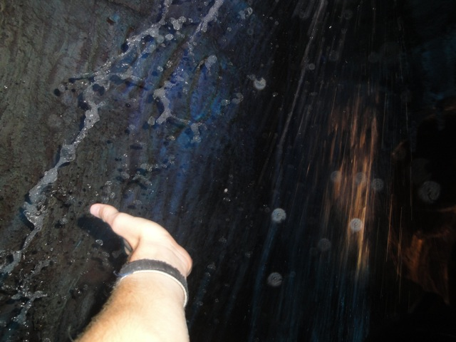
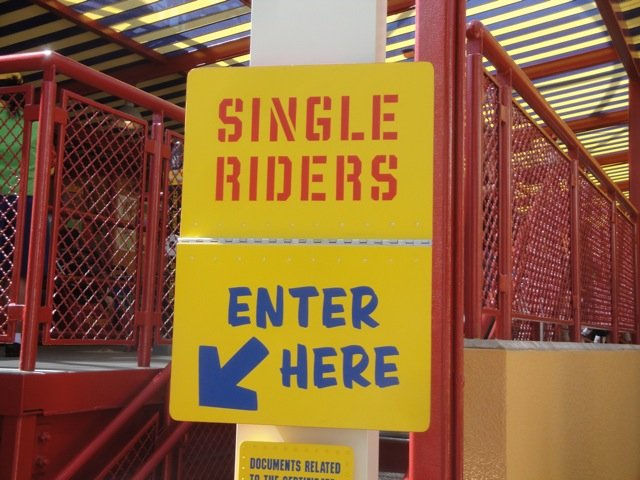
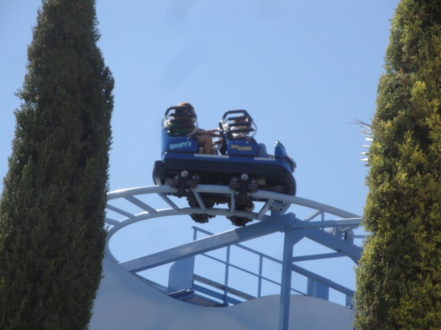
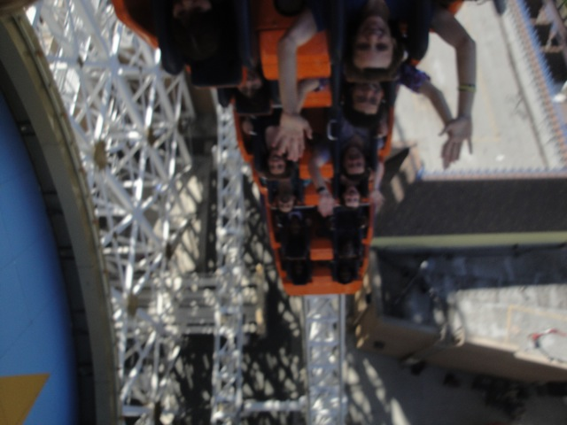
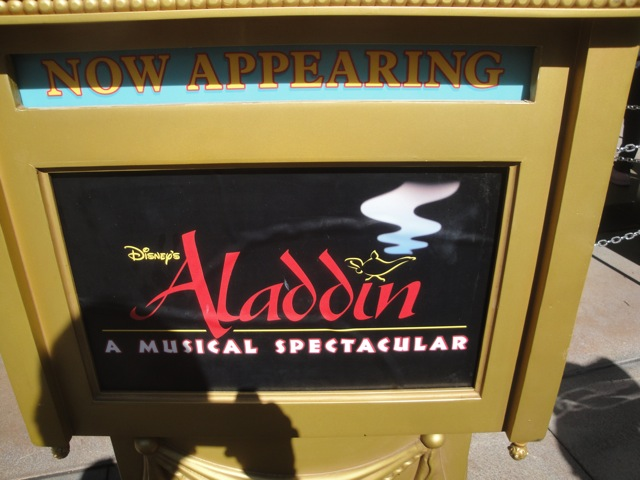
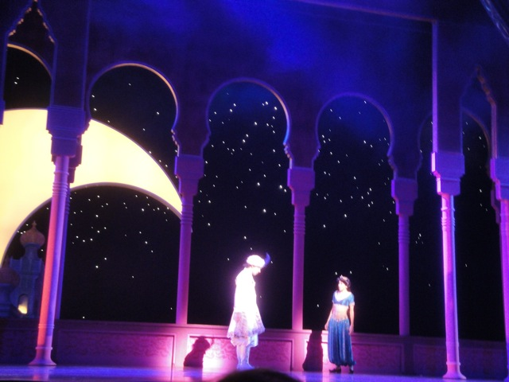
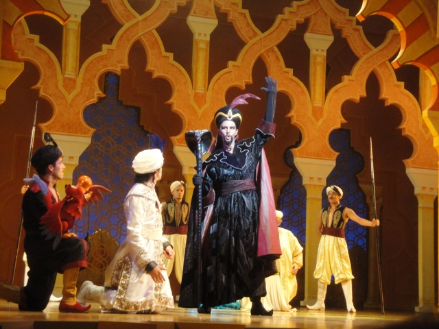

Disneyland Summer 2011
All right. As you all know, the Disneyland Resort not only opened up the brand new Little Mermaid Dark Ride this summer, but it also redid Star Tours. So with two new experiences at the Disneyland Resort, we had to take a visit.
All right. What better way to start off the day than with a ride on Space Mtn?
Thank you Star Tours!!!! =)
And as always, Space Mtn was running really well.
 Well, we might as well get it out of the way before it grows an insane line.
Well, we might as well get it out of the way before it grows an insane line.
Oops. Spoke too soon.
Hey. I'm just glad I was able to get this fastpass. When I came back, the fastpasses were for 10:00 PM.
Yeah. Disneyland is freaking beautiful.
 How about a quick ride on Matterhorn while we're here?
How about a quick ride on Matterhorn while we're here?
LAME!!!!!!!!!!!!!!!!!!!! =(
 Welcome to TOOOOOOOOOONTOWN!!!!
Welcome to TOOOOOOOOOONTOWN!!!!
 Why can't other parks get Cartoon Spin!!!? This dark ride kicks major ass!!!!
Why can't other parks get Cartoon Spin!!!? This dark ride kicks major ass!!!!
Yeah. I love Vekoma Rollerskaters.
This summer, I managed to ride all of the rollerskaters in Southern California!! =)
Toontown > Hollywood any day of the week.
 You know, I think it's time we paid a visit to our good friend, Big Thunder Mtn Goat.
You know, I think it's time we paid a visit to our good friend, Big Thunder Mtn Goat.

High Fiving the Waterfall!!!
 Yeah. Big Thunder Mtn was fun as usual.
Yeah. Big Thunder Mtn was fun as usual.
Suprisingly, Pirates actually managed to have a short line today.
"I just couldn't live with the 405 being closed!!!!"
HOLY CRAP!!!! This is the Fastpass Return line for Star Tours!!!!
C3PO will be leading us through the new Star Tours. Let's just hope that this isn't his first flight and he's still getting used to his programming.
Ooh. Star Tour's line is now looking snazzy!
Aww. Poor Captain Rex is locked up in the freezer. =(
This part of the line was really cool as people were walking through the screen.
"Quit bitching about spaceport security and accept your probing!!!! Hey, We still have more class than LAX!!!"
 New Star Tours kicks ass!!! It flowed well and was a lot of fun!!! Never thought I'd say this, but great job C3PO!!!
New Star Tours kicks ass!!! It flowed well and was a lot of fun!!! Never thought I'd say this, but great job C3PO!!!
Oh, and those California Adventure letters, they're all gone. California Adventure now has an MGM Studios type of entrance, which looks really good.
That greetings from California Postcard is now gone as well.
*gasp* More construction at California Adventure!!!! I never would've suspected!!!
Something tells me that this is the last you will ever see of the Golden Gate Bridge.
Anyone know what that's going to be? I literally have no idea.
In Incrediblecoasters Tradition, we had lunch at Storytellers, and it was really freaking good.
All right!!! Now let's check out the Disneyland Resort's other new attraction. The Little Mermaid.
Oh boy. This is gonna be painful to wait for.
Luckily the ride has those never ending cars like on Haunted Mansion or Florida's Nemo, or else we'd really be screwed.
So far, this is pretty cool!!! The under the sea party is pretty fun!!
Why is Ariel's hair made of play doh?
"Hey!!!! I remember you!!!! You were my teacher back in Middle School!!!! They'll hire just about anyone at that place!!!"
They kiss!!!!? They actually kiss after "Kiss the girl", LAME!!!!!!!!!!!!!!! SO DISSAPOINTED!!!!!!!! I was hoping to see a Super Sized Pallar..I mean Ursula get stabbed by that ship!!!! I can understand that that'd be pretty much impossible to recreate on the dark ride, but just kissing and having no real conflict, HOW F*CKING LAME!!!!!! It'd sort of be like if on Snow White, after seeing the Evil Queen turn into the hag to get Snow White, Prince Charming just comes along and takes Snow White away while the Queen just shrugs and says "Dammit!!! I'm too late!!! Oh well." Come on Disney!!!! You could've at least brought Vanessa into the ride!!!! Oh well. At least the anamatronics looked freaking amazing.
Love this new sign on Paradise Pier.
Never thought I'd see Corn Dog Castle getting a makeover.
 And speaking of Makeovers, Mullholland Madness just finished it's makeover and is now known as Goofy's Sky School.
And speaking of Makeovers, Mullholland Madness just finished it's makeover and is now known as Goofy's Sky School.

Sweet!!! They still have the single riders line for it!!!

Meh. While it didn't make it any better, it's not any worse either. It's still just plain old Mullholland Madness, only painted white.
Damn!!! That new eating area looks NICE!!!!!!
Nothing new with Maliboomer's grave. Move along.
 Thanks to the magic of Single Riders Lines, we were also able to make it on California Screamin today as well.
Thanks to the magic of Single Riders Lines, we were also able to make it on California Screamin today as well.

LOOP DE LOOP!!!!!

We actually saw the Aladdin Show today since all the rides had ridicoulsly long lines.

"Hey Jasmine, I love you."

This show was actually really awesome. The acting was really good, and the Genie made me laugh quite a few times. Definetly recommended.
 Yeah. Had to get in some sweet ejector air today.
Yeah. Had to get in some sweet ejector air today.
And of course, we had to get on Indiana Jones since yeah. That ride is freaking amazing.
 "Yeah. This is how I'm gonna drive once I get my liscence."
"Yeah. This is how I'm gonna drive once I get my liscence."
Home